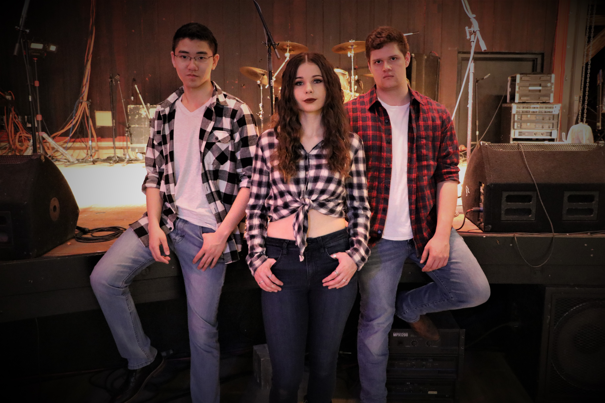

Our Band
Based in Edmonton Alberta, Heartland is a group of dedicated and talented musicians. The core members of Heartland are Brianna Boyko (lead vocals, fiddle, ukulele), Josh Sadoway (self-taught rhythm guitar, back-up vocals), and Martin Bui (drums and percussion). These three friends have been playing together since March 2017.
Heartland has been blessed to perform at venues such as the Boot Scootin’ Boogie Dancehall, The Aviary, the Naked Cyber Cafe, the Station on Jasper, The Almanac, and SoundLab Studios, and they have played at events such as Big Valley Jamboree (2017), Blue Quill’s Party in the Park, and many more!
This trio plays covers and originals with their unique country-rock flare. Their lead singer recorded a single in 2017 written by Elizabeth MacInnis titled “Tell You What,” which can be found on Apple Music and Spotify. Heartland is also excited to perform their new collection of originals written by their guitarist, who began writing songs shortly after joining the band. The group has worked hard and is constantly staying busy practicing; committed to polishing each song to perfection. As well as playing shows for both charity, community, and public events.